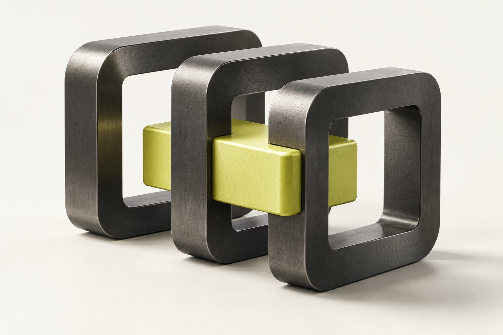

Creative technology, built for business.
Less busywork.
More business.
Websites, automation and AI agents that turn attention into action.
Explore services
Make room for better work.
Websites & web apps
A clear offer, a memorable first impression and a straightforward path to enquiry.
Business automation
Connect enquiries, follow-ups and everyday tasks so your team spends less time moving information around.
AI agents
Assistants grounded in your business information, with defined boundaries and human handover.
Booking & payments
Let customers book and pay, with confirmations and reminders that keep the process moving.
Signal Bureau
Typography
Built with intent.
A memorable website should make your business easier to understand, and easier to choose.
Color palette
Select a swatch to copy its hex code.
3D & motion
These are website design prototypes. Headlines are draft options; sculpture images are art-direction references. No final theme or tagline has been selected.
Find your direction.
Compare the atmosphere, then open each live preview to feel the typography and layout.